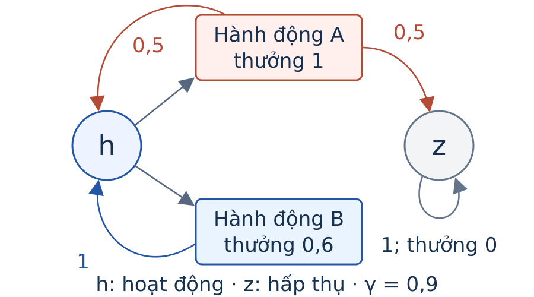
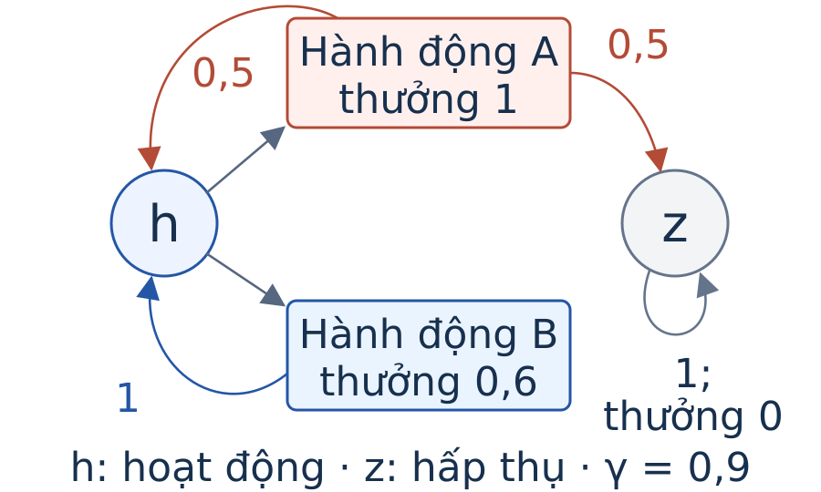
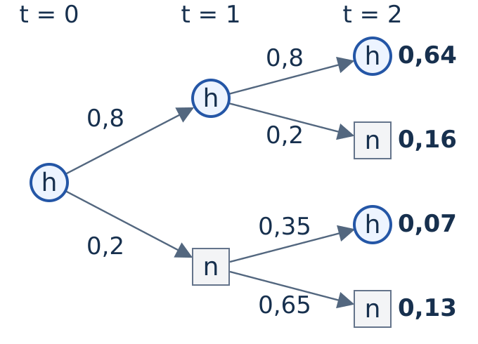
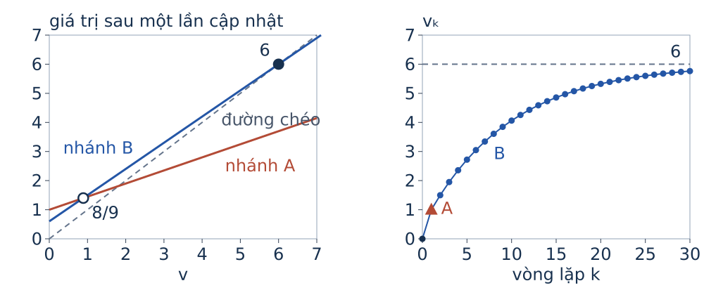
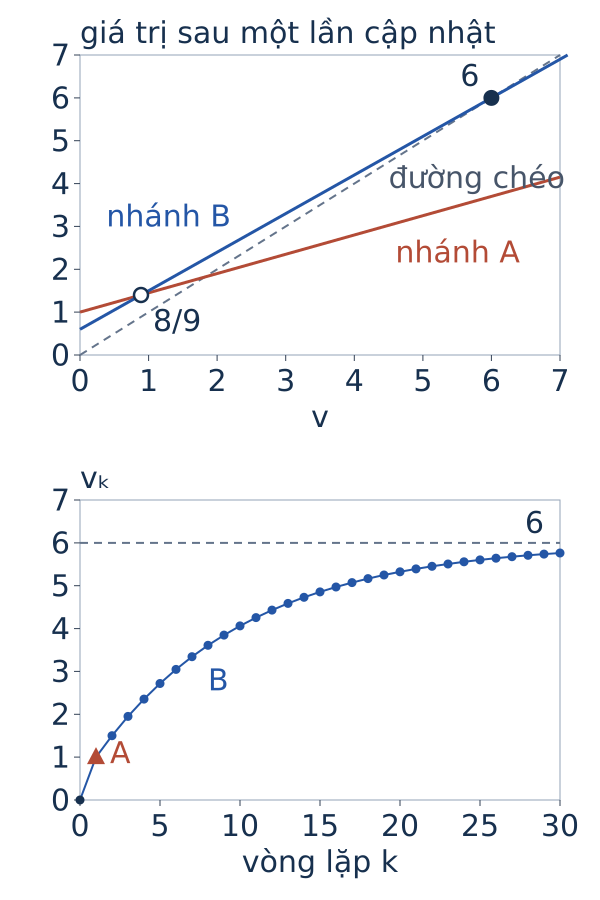

Ra quyết định tuần tự dưới điều kiện bất định
Xích Markov, quá trình quyết định Markov và lặp giá trị · Bài 13
Với quá trình quyết định Markov hữu hạn có mô hình đã biết và hệ số chiết khấu nhỏ hơn một, lặp giá trị hội tụ tới giá trị tối ưu duy nhất, và chính sách tham lam theo giá trị đó tối ưu trong mọi chính sách.
Cơ sở toán học cho AI · Học kỳ 1, 2026–2027
Trường Đại học Công nghệ · Đại học Quốc gia Hà Nội
Bài 07 giải bài toán quyết định hữu hạn, tất định bằng truy hồi ngược. Bài này có hai thay đổi:
trạng thái kế tiếp ngẫu nhiên, nên vế phải của phương trình Bellman cần kỳ vọng; số bước không giới hạn, nên không còn điều kiện cuối, và giá trị xuất hiện ở cả hai vế. Khi tác tử hành động, dữ liệu không còn độc lập cùng phân phối như ở Bài 12: trạng thái hôm nay phụ thuộc hành động hôm qua.
Nguồn: ghi chú bài giảng Bài 13, phần mở đầu và Câu hỏi mở đầu; Hệ quả 13.18, Định lý 13.19.
Tiên quyết và quy ước
Nhắc lại: quy hoạch động tất định (Định lý 07.49):
$$\begin{aligned}J_k(\xi)&=\min_{u}\bigl\{g_k(\xi,u)\\&\qquad+J_{k+1}\bigl(f_k(\xi,u)\bigr)\bigr\},\\ J_N&=g_N;\end{aligned}$$
quy tắc nhân, xác suất toàn phần, kỳ vọng toàn phần;
ước lượng hợp lý cực đại (maximum likelihood estimation, MLE) phân loại: $\hat\pi_k=m_k/m$ (Định lý 11.7);
$\sum_{j\ge0}\gamma^j=1/(1-\gamma)$ khi $0\le\gamma<1$; chuẩn cực đại $\lVert x\rVert_\infty=\max_i\lvert x_i\rvert$; mọi dãy Cauchy số thực hội tụ.
Ký hiệu: $t$: thời điểm; $k$: vòng lặp; $n$: trạng thái nghỉ; $m$: số lần thử.
$g_k$ là chi phí giai đoạn, $f_k$ là hàm chuyển, $J_k$ là chi phí tối ưu còn lại; cực tiểu lấy trên các điều khiển khả thi tại $\xi$. Nhận xét 07.47: khi trạng thái chưa đủ thông tin thì mở rộng trạng thái.
Ba công cụ xác suất là Mệnh đề 10.10, Định lý 10.11, 10.29. Độc lập có điều kiện (Định nghĩa 10.16) và kỳ vọng có điều kiện theo biến rời rạc (Định nghĩa 10.28) là nền của mọi kỳ vọng trong bài. Tính hội tụ của mọi dãy Cauchy số thực (tính đầy đủ của $\mathbb R$) dùng trong chứng minh định lý điểm bất động.
Bài 11 viết $n$, $n_k$ cho số lần thử; ở đây $n$ là trạng thái nghỉ, nên số lần thử viết $m$. Chỉ số $k$ đếm vòng tính toán, khác thời điểm $t$ robot hành động.
Nguồn: ghi chú bài giảng Bài 13, Kiến thức tiên quyết; §2.
Mục tiêu học tập
Phát biểu tính Markov, lập ma trận chuyển, truyền phân phối nhiều bước.
Mô hình hóa bài toán tuần tự bằng quá trình quyết định Markov hữu hạn.
Suy ra phương trình Bellman cho chính sách cố định và phương trình Bellman tối ưu.
Chứng minh toán tử Bellman tối ưu là ánh xạ co; suy ra lặp giá trị hội tụ, tham lam theo điểm bất động là tối ưu.
Lặp giá trị bằng tay; giải thích vì sao hành động thưởng tức thời lớn nhất có thể không tối ưu.
Ước lượng hàng chuyển bằng số đếm, tính mục tiêu Bellman; phân biệt quy hoạch với học tăng cường.
Mục tiêu 1 được đo bằng Bài tập 13.1, mục tiêu 4 bằng Bài tập 13.2, mục tiêu 6 bằng Bài tập 13.3; các mục tiêu 2, 3, 5 được đo bằng bài tập trong tệp bài tập.
Mục tiêu 2 gồm đủ các thành phần: trạng thái, hành động, xác suất chuyển, phần thưởng, hệ số chiết khấu và chính sách. Mục tiêu 4 nói về chính sách tham lam theo điểm bất động của toán tử Bellman tối ưu; tham lam theo một vector bất kỳ chỉ có chặn mất mát. Ở mục tiêu 6, học tăng cường dùng dữ liệu tương tác thay cho mô hình đã biết.
Nguồn: ghi chú bài giảng Bài 13, Mục tiêu học tập.
Vấn đề trung tâm
Câu hỏi: Khi một hành động ảnh hưởng đến các trạng thái và phần thưởng trong tương lai, làm thế nào tìm chính sách tối ưu?
Câu trả lời theo từng mạch:
mạch 2: phân phối trạng thái truyền bằng $\mu_{t+1}=\mu_tP$; mạch 3: giá trị của một chính sách dừng là nghiệm duy nhất của $V=r^\pi+\gamma P^\pi V$; mạch 4: $T$ co với hệ số $\gamma$, lặp giá trị hội tụ; mạch 5: chính sách tham lam theo điểm bất động tối ưu trong mọi chính sách, và lặp giá trị dừng được với chứng nhận sai số; mạch 6: khi học mô hình từ dữ liệu, mọi bảo đảm chỉ thuộc về mô hình ước lượng. Nguồn: ghi chú bài giảng Bài 13, phần mở đầu.
Ví dụ: robot với hai hành động
$h$: hoạt động; $z$: dừng mãi, thưởng $0$.
$A$ tại $h$: thưởng $1$; rồi còn hoạt động hoặc dừng, mỗi bên xác suất $1/2$.
$B$ tại $h$: thưởng $0{,}6$; chắc chắn còn hoạt động.
Thưởng ở bước $t$ nhân $0{,}9^t$, cần tổng kỳ vọng lớn nhất. Câu hỏi: Chọn hành động nào tại $h$?
So thưởng một bước: $A$ hơn vì $1>0{,}6$.
Tổng thưởng chiết khấu kỳ vọng: luôn chọn $A$ được $20/11\approx1{,}82$, luôn chọn $B$ được $6$.


Chọn $A$ làm robot dừng với xác suất $1/2$ sau mỗi lần chọn và mất mọi phần thưởng về sau. Hai con số là nghiệm của $V^A(h)=1+0{,}45\,V^A(h)$ và $V^B(h)=0{,}6+0{,}9\,V^B(h)$.
Câu trả lời trọn vẹn cần so với mọi cách chọn, kể cả cách chọn đổi theo lịch sử, mà không liệt kê hết. $z$ là trạng thái hấp thụ (absorbing state). Trong hình, hai hình tròn là trạng thái, hai ô là hành động; $A$ chỉ giữ robot hoạt động với xác suất $0{,}5$.
Nguồn: ghi chú bài giảng Bài 13, Câu hỏi mở đầu; §3, Ví dụ 13.1 và Hình 13.1.
2. Xích Markov và phân phối trạng tháiKhi bước sau chỉ phụ thuộc trạng thái hiện tại, phân phối trạng thái được truyền bằng phép nhân ma trận.
Tính Markov · Ma trận chuyển · Phân phối sau nhiều bước · Xác suất quỹ đạo
Robot vận hành theo một quy tắc cố định; trạng thái bước sau ngẫu nhiên và chỉ phụ thuộc trạng thái hiện tại. Xích Markov và ma trận chuyển cho công thức $\mu_t=\mu_0P^t$ và xác suất của một quỹ đạo. Mạch sau thêm hành động, mỗi hành động một hàng chuyển.
Nguồn: ghi chú bài giảng Bài 13, §4.
Ví dụ: robot hoạt động hoặc nghỉ
Chưa có hành động: $h$ (hoạt động), $n$ (nghỉ); bắt đầu ở $h$.
Từ $h$: tới $h$ với $0{,}8$, tới $n$ với $0{,}2$.
Từ $n$: tới $h$ với $0{,}35$, ở lại $n$ với $0{,}65$.
Câu hỏi: Xác suất robot hoạt động sau hai bước là bao nhiêu?
Trực quan. Cộng hai đường tới $h$: $h\to h\to h$ ($0{,}64$), $h\to n\to h$ ($0{,}07$); tổng $0{,}71$ (Ví dụ 13.2).
Diễn giải: $0{,}71>0{,}8^2$: robot có thể nghỉ một bước rồi hoạt động lại.

Xác suất bước sau chỉ dùng trạng thái hiện tại: trạng thái hiện tại tóm tắt mọi thông tin của quá khứ cần cho bước kế tiếp. Mỗi đường đi có xác suất là tích các xác suất chuyển: $0{,}8\cdot0{,}8$ và $0{,}2\cdot0{,}35$.
Trước khi có hành động, robot vận hành theo một quy tắc cố định. Cây có bốn lá $0{,}64$, $0{,}16$, $0{,}07$, $0{,}13$, tổng bằng $1$. Lá tròn là trạng thái $h$, lá vuông là trạng thái $n$.
Nguồn: ghi chú bài giảng Bài 13, §4, Ví dụ 13.2.
Xích Markov thuần nhất
Định nghĩa 13.1. Dãy $S_0,S_1,\ldots$ trên $\mathcal S$ hữu hạn có tính Markov (Markov property) nếu
$$\begin{aligned}&\mathbb P(S_{t+1}=s'\mid\\&\qquad S_0=s_0,\ldots,S_t=s_t)\\&\quad=\mathbb P(S_{t+1}=s'\mid S_t=s_t)\\&\quad(4.1)\end{aligned}$$
với mọi $t$ và mọi $s_0,\ldots,s_t,s'$ có $\mathbb P(S_0=s_0,\ldots,S_t=s_t)>0$.
Dãy có tính Markov là xích Markov thuần nhất (time-homogeneous Markov chain) khi có ma trận chuyển (transition matrix) $P$ không phụ thuộc $t$, với mọi $i$ có $\mathbb P(S_t=i)>0$:
$$\begin{aligned}P_{ij}&=\mathbb P(S_{t+1}=j\mid S_t=i),\\ P_{ij}&\ge0,\quad\textstyle\sum_jP_{ij}=1.\quad(4.2)\end{aligned}$$
$P$ là ma trận hàng ngẫu nhiên (row-stochastic matrix): phần tử không âm, tổng mỗi hàng bằng $1$.
Dãy $S_0,S_1,\ldots$ là một quá trình ngẫu nhiên rời rạc theo thời gian (discrete-time stochastic process). Tính Markov là một trường hợp của độc lập có điều kiện (Định nghĩa 10.16) và vẫn cho phép $S_{t+1}$ phụ thuộc $S_t$; thuần nhất là giả thiết riêng.
Robot của ví dụ trước có $P=\begin{pmatrix}0{,}8&0{,}2\\0{,}35&0{,}65\end{pmatrix}$ theo thứ tự $h,n$. Trong học máy, trạng thái là đối tượng mô hình hóa: nếu cả mức pin và vị trí ảnh hưởng bước sau, trạng thái chỉ ghi vị trí có thể mất tính Markov.
Nguồn: ghi chú bài giảng Bài 13, §4.1, Định nghĩa 13.1.
Phân phối sau nhiều bước
Giả thiết: xích Markov thuần nhất trên $\mathcal S$ hữu hạn, ma trận chuyển $P$; $\mu_t=\bigl(\mathbb P(S_t=s)\bigr)_{s\in\mathcal S}$ là vector hàng.
Kết luận: với mọi $t\ge0$, $\mu_t$ là hàng xác suất và
$$\begin{aligned}\mu_{t+1}&=\mu_tP,\\ \mu_t&=\mu_0P^t\quad(P^0=I),\\&\quad(4.3)\end{aligned}$$
$$\begin{aligned}&\mathbb P(S_0=s_0,\ldots,S_t=s_t)\\&\quad=\mu_0(s_0)\prod_{k=0}^{t-1}P_{s_ks_{k+1}}.\quad(4.4)\end{aligned}$$
Chứng minh. Xác suất toàn phần theo $\{S_t=i\}$, rồi quy nạp; (4.4) từ quy tắc nhân và (4.1) (Mệnh đề 13.2, Hệ quả 13.3).
Ý nghĩa: (4.4) là hợp lý của chuỗi trạng thái quan sát được.
Với robot, $\mu_1=(0{,}8;\,0{,}2)$ và $\mu_2=\mu_1P=(0{,}71;\,0{,}29)$, trùng tổng hai đường đi $0{,}64+0{,}07$. Khi biết mô hình, phân phối sau $t$ bước cần $t$ phép nhân vector với ma trận.
Tính thuần nhất dùng ở công thức một bước $\mu_{t+1}=\mu_tP$; với ma trận đổi theo thời gian $P_0,P_1,\ldots$ thì $\mu_t=\mu_0P_0\cdots P_{t-1}$ (Nhận xét 13.4). Tổng mỗi hàng của $P$ bằng $1$, tổng cột không nhất thiết; dùng vector cột thì $\mu_{t+1}^\top=P^\top\mu_t^\top$. Ước lượng ma trận chuyển từ dữ liệu chuỗi bắt đầu từ (4.4).
Nguồn: ghi chú bài giảng Bài 13, §4.2, Mệnh đề 13.2, Hệ quả 13.3, Nhận xét 13.4.
Ví dụ: xác suất chuyển và xác suất đồng thời
Cùng ma trận $P=\begin{pmatrix}0{,}8&0{,}2\\0{,}35&0{,}65\end{pmatrix}$, thứ tự $h,n$; $\mu_t=(0{,}4;\,0{,}6)$ (Ví dụ 13.3). Tính hai xác suất và $\mu_{t+1}$.
Xác suất chuyển: $\mathbb P(S_{t+1}=n\mid S_t=h)=P_{hn}=0{,}2$.
Xác suất đồng thời: $\mathbb P(S_t=h,S_{t+1}=n)=0{,}4\cdot0{,}2=0{,}08$.
Bước sau: $\mu_{t+1}=(0{,}53;\,0{,}47)$.
Nếu $S_t$, $S_{t+1}$ độc lập thì xác suất đồng thời bằng $0{,}4\cdot0{,}47=0{,}188$.
Diễn giải: $0{,}08\ne0{,}188$: xích có tính Markov nhưng hai trạng thái liên tiếp không độc lập.
Tính Markov nói về phân phối có điều kiện theo hiện tại; độc lập nói về việc biết một biến có đổi phân phối của biến kia hay không (Nhận xét 13.4, mục 1). Ở xích này hai trạng thái liên tiếp không độc lập; nói chung các trạng thái trên một quỹ đạo không độc lập cùng phân phối (i.i.d.), khác với dữ liệu của Bài 12.
$\mu_{t+1}=(0{,}4\cdot0{,}8+0{,}6\cdot0{,}35;\ 0{,}4\cdot0{,}2+0{,}6\cdot0{,}65)=(0{,}32+0{,}21;\ 0{,}08+0{,}39)$.
Nguồn: ghi chú bài giảng Bài 13, §4.2, Ví dụ 13.3, Nhận xét 13.4.
Bài tập: truyền phân phối hai bước
Câu hỏi: Robot có hai trạng thái $h$ (hoạt động), $n$ (nghỉ), $P=\begin{pmatrix}0{,}7&0{,}3\\0{,}2&0{,}8\end{pmatrix}$, $\mu_0=(1;\,0)$ (Bài tập 13.1).
(a) Tính $\mu_1$ và $\mu_2$. (b) Giải thích vì sao xác suất ở $h$ sau hai bước khác $0{,}7^2$.
Lời giải: (a) $\mu_1=(1;\,0)P=(0{,}7;\,0{,}3)$.
$\mu_2=\mu_1P=(0{,}49+0{,}06;\ 0{,}21+0{,}24)=(0{,}55;\,0{,}45)$.
(b) Theo (4.4), $h\to h\to h$ có xác suất $0{,}49$, $h\to n\to h$ có $0{,}06$; $0{,}7^2$ chỉ tính đường thứ nhất.
Kiểm tra: $0{,}49+0{,}06=0{,}55=\mu_2(h)$.
Gợi ý: nhân vector hàng với $P$ từ bên phải (Mệnh đề 13.2); ở (b), liệt kê các đường đi từ $h$ tới $h$ sau hai bước và tính xác suất mỗi đường theo (4.4).
Nhầm lẫn dễ gặp: lấy $0{,}7^2$ là bỏ đường $h\to n\to h$, tức bỏ khả năng robot nghỉ một bước rồi hoạt động lại. Kiểm tra cuối: tổng hai tọa độ của $\mu_2$ bằng $1$.
Nguồn: ghi chú bài giảng Bài 13, §4.2, Bài tập 13.1.
3. Quá trình quyết định Markov và giá trị của chính sáchNếu hành động chỉ phụ thuộc trạng thái hiện tại, giá trị của cách chọn đó là nghiệm của một hệ phương trình tuyến tính.
Quá trình quyết định Markov · Chính sách · Tổng thưởng chiết khấu · Hàm giá trị · Phương trình Bellman
Xích Markov của mạch 2 có một ma trận chuyển cố định; robot của mạch mở đầu có hai hành động, mỗi hành động một hàng chuyển và một phần thưởng. Mô hình có điều khiển, chính sách và tổng thưởng chiết khấu dẫn tới phương trình $V=T^\pi V$, có nghiệm duy nhất là giá trị của chính sách dừng. Giá trị nhìn trước một bước $Q_U$ được dùng lại ở mạch 4 để chọn hành động.
Nguồn: ghi chú bài giảng Bài 13, §5.
Quá trình quyết định Markov hữu hạn
Mỗi hành động chọn một hàng chuyển tiếp; cần giá trị dài hạn của một cách chọn hành động.
Định nghĩa 13.5. Quá trình quyết định Markov (Markov decision process, MDP) hữu hạn gồm:
$\mathcal S$, $\mathcal A(s)$ hữu hạn, khác rỗng (O1); robot: $\mathcal S=\{h,z\}$, $\mathcal A(h)=\{A,B\}$;
tập phần thưởng (reward) hữu hạn $\mathcal R\subset[-R_{\max},R_{\max}]$ (M2); robot: $\mathcal R=\{0;\,0{,}6;\,1\}$;
mô hình chuyển $p(s',c\mid s,a)\ge0$, $c\in\mathcal R$, với $\sum_{s'}\sum_{c}p(s',c\mid s,a)=1$;
hệ số chiết khấu (discount factor) $\gamma\in[0,1)$ (O2); robot: $\gamma=0{,}9$.
Với robot, tại $z$ chỉ có một hành động và $R_{\max}=1$. Các thành phần của mô hình là đối tượng cố định; trạng thái, hành động và phần thưởng trên một quỹ đạo là ngẫu nhiên.
Ba nhãn (O1), (M2), (O2) là giả thiết của bài: (O1) cho cực đại theo hành động đạt được, (M2) cho mọi lịch sử là biến rời rạc, (O2) cho phần đuôi tiến về $0$.
Nguồn: ghi chú bài giảng Bài 13, §2 (giả thiết); §5.1, Định nghĩa 13.5.
Lịch sử và giả thiết Markov có điều khiển
Lịch sử (history) $H_t=(S_0,A_0,R_1,\ldots,A_{t-1},R_t,S_t)$; giá trị $\tau$ của $H_t$ có trạng thái cuối $s_\tau$. Tác tử (agent) quan sát $H_t$, chọn $A_t\in\mathcal A(S_t)$; môi trường sinh $S_{t+1}$, $R_{t+1}$.
Giả thiết: (M1) Markov có điều khiển, thuần nhất: với mọi $t,\tau,a$ có $\mathbb P(H_t=\tau,A_t=a)>0$,
$$\begin{aligned}&\mathbb P(S_{t+1}=s',R_{t+1}=c\mid\\&\qquad H_t=\tau,A_t=a)\\&\quad=p(s',c\mid s_\tau,a).\quad(5.1)\end{aligned}$$
Xác suất chuyển và phần thưởng kỳ vọng một bước :
$$\begin{aligned}&P(s'\mid s,a)\\&=\textstyle\sum_{c\in\mathcal R}p(s',c\mid s,a),\quad(5.2)\end{aligned}$$
$$\begin{aligned}&r(s,a)\\&=\textstyle\sum_{s'}\sum_{c}c\,p(s',c\mid s,a).\end{aligned}$$
Với robot, $p(h,1\mid h,A)=p(z,1\mid h,A)=1/2$, nên (5.2) cho $P(h\mid h,A)=1/2$ và $r(h,A)=1$. $R_{t+1}$ là phần thưởng quan sát được, ngẫu nhiên; $r(s,a)$ là trung bình của nó theo mô hình.
Giả thiết Markov áp dụng cho cả phần thưởng: một biến ẩn ảnh hưởng phần thưởng tương lai phải được đưa vào trạng thái. Khi phần thưởng là hàm tất định $r(s,a,s')$ của bước chuyển, $r(s,a)=\sum_{s'}P(s'\mid s,a)\,r(s,a,s')$.
Nguồn: ghi chú bài giảng Bài 13, §2 (giả thiết M1); §5.1, Định nghĩa 13.5.
Chính sách
Định nghĩa 13.6. Chính sách (policy) tổng quát $\rho$: $\mathbb P(A_t=a\mid H_t=\tau)=\rho_t(a\mid\tau)$, có thể ngẫu nhiên và phụ thuộc thời gian, lịch sử.
Chính sách Markov dừng (stationary Markov policy) $\pi$: $\rho_t(a\mid\tau)=\pi(a\mid s_\tau)$; tất định (deterministic) khi chọn $\pi(s)$ với xác suất $1$.
$$\begin{aligned}&P^\pi(s,s')\\&\quad=\sum_{a}\pi(a\mid s)\,P(s'\mid s,a),\\&r^\pi(s)=\sum_{a}\pi(a\mid s)\,r(s,a).\\&\quad(5.3)\end{aligned}$$
Cố định $\rho$ và $S_0=s$: $\mathbb P_\rho$, $\mathbb E_\rho$ là xác suất, kỳ vọng theo quỹ đạo.
Dưới $\pi$: $(S_t)$ là xích Markov thuần nhất với ma trận $P^\pi$. Robot trộn đều $A$, $B$: $P^\pi(h,h)=0{,}75$, $r^\pi(h)=0{,}8$ (Ví dụ 13.4).
Quy luật môi trường $p$ và quy tắc chọn $\rho$ là hai đối tượng riêng; cố định $\rho$ và $S_0=s$ thì phân phối của mọi lịch sử xác định bằng quy tắc nhân, lần lượt cho từng hành động và từng bước chuyển.
Với $\pi$ dừng, xác suất toàn phần theo $A_t$ cho $\mathbb P_\pi(S_{t+1}=s'\mid H_t=\tau)=P^\pi(s_\tau,s')$, nên Mệnh đề 13.2 áp dụng. Dưới chính sách phụ thuộc lịch sử, riêng dãy $(S_t)$ nói chung không còn là xích Markov, dù môi trường thỏa (5.1). Với robot, $P^\pi(h,h)=\tfrac12\cdot\tfrac12+\tfrac12\cdot1$ và $r^\pi(h)=\tfrac12\cdot1+\tfrac12\cdot0{,}6$ theo (5.3).
Nguồn: ghi chú bài giảng Bài 13, §5.1, Định nghĩa 13.6, Ví dụ 13.4.
Tổng thưởng chiết khấu và hàm giá trị
Luôn chọn $B$, cộng không trọng số: $0{,}6+0{,}6+\cdots=+\infty$.
Trực quan. Chiết khấu giảm trọng số của phần thưởng nhận muộn: phần thưởng sau $t$ bước nhân $\gamma^t$.
Định nghĩa 13.7. Tổng thưởng chiết khấu (discounted return), với quy ước $\gamma^0=1$:
$$G_t=\sum_{j\ge0}\gamma^jR_{t+j+1}.\qquad(5.4)$$
Hàm giá trị (value function) $V^\rho(s)=\mathbb E_\rho[G_0\mid S_0=s]$; giá trị tối ưu (optimal value) $V^*(s)=\sup_\rho V^\rho(s)$ (5.5).
Chính sách $\rho^*$ tối ưu khi $V^{\rho^*}=V^*$.
$V^*$ là cận trên đúng theo mọi chính sách tổng quát, kể cả phụ thuộc lịch sử. $r(s,a)$ là phần thưởng kỳ vọng của một bước, còn $V^\rho$ gán một số cho cả chuỗi lựa chọn.
Khi $\gamma=0$, quy ước $\gamma^0=1$ cho $G_0=R_1$: chỉ bước đầu được tính. Khi $\gamma$ gần $1$, phần thưởng muộn gần như giữ nguyên trọng số.
Nguồn: ghi chú bài giảng Bài 13, §5.2, Định nghĩa 13.7.
Tồn tại giá trị và chặn phần đuôi
Mệnh đề 13.8. Giả thiết: MDP của Định nghĩa 13.5; $\rho$ là một chính sách bất kỳ.
Kết luận: trên mọi quỹ đạo, chuỗi (5.4) hội tụ tuyệt đối và với mọi $K\ge0$,
$$\begin{aligned}\lvert G_t\rvert&\le\frac{R_{\max}}{1-\gamma},\\ \Bigl\lvert\sum_{t\ge K}\gamma^tR_{t+1}\Bigr\rvert&\le\frac{\gamma^KR_{\max}}{1-\gamma},\\ \lvert V^\rho(s)\rvert&\le\frac{R_{\max}}{1-\gamma}.\quad(5.6)\end{aligned}$$
Chứng minh. So với cấp số nhân $R_{\max}\sum_j\gamma^j$, dùng $\lvert R_{t+1}\rvert\le R_{\max}$ (M2) và $0\le\gamma<1$ (O2).
Ý nghĩa: $V^*$ hữu hạn; cắt sau $K$ bước thì sai số không quá $\gamma^KR_{\max}/(1-\gamma)$.
Robot: $R_{\max}=1$, $\gamma=0{,}9$, nên $\lvert G_t\rvert\le10$.
Phần đuôi dùng cùng phép so sánh với cấp số nhân, bắt đầu từ số hạng $\gamma^K$. $G_0$ bị chặn nên kỳ vọng $V^\rho(s)$ tồn tại và cũng bị chặn bởi $R_{\max}/(1-\gamma)$.
Số bước $K$ để phần đuôi không vượt $\varepsilon$ tăng khi $\gamma\to1$. Với $\gamma=1$, chặn không còn: luôn chọn $B$ cho tổng $+\infty$ như trang trước. Trong học máy: khi cắt một quỹ đạo sau $K$ bước, sai số của tổng thưởng không vượt $\gamma^KR_{\max}/(1-\gamma)$.
Nguồn: ghi chú bài giảng Bài 13, §5.2, Mệnh đề 13.8.
Bài tập: tổng thưởng chiết khấu của một dãy phần thưởng vô hạn
Câu hỏi: Cho $\gamma=0{,}9$ và dãy phần thưởng $R_1=2$, $R_k=7$ với mọi $k\ge2$. Tính $G_1$ và $G_0$ theo (5.4) (Bài tập 13.4).
Lời giải: $G_1=\sum_{j\ge0}\gamma^jR_{j+2}=7\sum_{j\ge0}0{,}9^j=7/0{,}1=70$.
$G_0=R_1+\gamma G_1=2+0{,}9\cdot70=65$.
Kiểm tra: với $R_{\max}=7$, (5.6) cho $\lvert G_t\rvert\le70$; $G_1$ đạt dấu bằng vì $R_k=R_{\max}=7$ với mọi $k\ge2$.
Gợi ý: $G_1$ chỉ chứa các phần thưởng bằng $7$, nên là tổng của một cấp số nhân; tách số hạng đầu của $G_0$ để viết $G_0$ theo $G_1$.
Tách số hạng $j=0$ và đổi chỉ số $j\mapsto j+1$ cho $G_0=R_1+\gamma G_1$, tức đẳng thức $G_t=R_{t+1}+\gamma G_{t+1}$ với $t=0$. Kiểm trực tiếp: $G_0=2+7\cdot0{,}9/0{,}1=65$. Nhầm lẫn dễ gặp: tính $G_1$ từ $R_1$, tức lệch chỉ số một bước.
Nguồn: tệp bài tập Bài 13, Bài tập 13.4 (Sutton và Barto (2018), Bài 3.9).
Giá trị nhìn trước một bước
Trực quan. $G_t=R_{t+1}+\gamma G_{t+1}$: giá trị tại $s$ bằng thưởng bước đầu cộng $\gamma$ nhân giá trị kỳ vọng tại trạng thái kế tiếp.
Định nghĩa 13.9. Với $U:\mathcal S\to\mathbb R$ (một vector của $\mathbb R^{\lvert\mathcal S\rvert}$), giá trị nhìn trước một bước (one-step lookahead value) là
$$\begin{aligned}&Q_U(s,a)=r(s,a)\\&\quad+\gamma\sum_{s'\in\mathcal S}P(s'\mid s,a)\,U(s').\\&\quad(5.7)\end{aligned}$$
Toán tử Bellman theo chính sách (policy Bellman operator) của $\pi$ dừng: $(T^\pi U)(s)=\sum_a\pi(a\mid s)\,Q_U(s,a)$ (5.8), tức
$$T^\pi U=r^\pi+\gamma P^\pi U.\qquad(5.9)$$
$Q_U(s,a)$ là phần thưởng kỳ vọng khi chọn $a$ tại $s$ cộng $\gamma$ nhân giá trị trung bình của $U$ tại trạng thái kế tiếp, khi $U$ thay cho giá trị thật của phần còn lại.
(5.9) có được khi thay (5.7) vào (5.8), đổi thứ tự hai tổng hữu hạn và dùng (5.3). Với robot, $Q_U(h,A)=1+0{,}45\,U(h)+0{,}45\,U(z)$ và $Q_U(h,B)=0{,}6+0{,}9\,U(h)$.
Nguồn: ghi chú bài giảng Bài 13, §5.3, Định nghĩa 13.9.
So sánh theo từng bước
So $V^\rho$ với $U$ rút về một bất đẳng thức một bước tại từng lịch sử.
Trực quan. Mỗi bước không làm tăng $U$ theo kỳ vọng; cộng dồn $K$ bước, số hạng cuối $\gamma^KU(S_K)$ tiến về $0$.
Bổ đề 13.11. Giả thiết: chính sách $\rho$, trạng thái đầu $s$, hàm $U:\mathcal S\to\mathbb R$; với mọi $t\ge0$, mọi $\tau$ có $\mathbb P_\rho(H_t=\tau\mid S_0=s)>0$:
$$\begin{aligned}&\textstyle\sum_{a}\rho_t(a\mid\tau)\,Q_U(s_\tau,a)\\&\quad\le U(s_\tau).\quad(5.11)\end{aligned}$$
Kết luận: $V^\rho(s)\le U(s)$; nếu (5.11) xảy ra dấu bằng với mọi $t$, $\tau$ như trên thì $V^\rho(s)=U(s)$.
Giả thiết (5.11) nói: tại mọi lịch sử có xác suất dương, trung bình theo hành động của giá trị nhìn trước không vượt $U$ tại trạng thái hiện tại. Bổ đề 13.11 được dùng hai lần: với dấu bằng cho chính sách dừng (Định lý 13.12), với dấu "$\le$" cho mọi chính sách khi so với giá trị tối ưu.
Nguồn: ghi chú bài giảng Bài 13, §5.3, Bổ đề 13.11.
Ý tưởng chứng minh: so sánh theo từng bước
Bổ đề 13.10. $\mathbb E_\rho[R_{t+1}+\gamma U(S_{t+1})\mid H_t=\tau]=\sum_a\rho_t(a\mid\tau)Q_U(s_\tau,a)$ (5.10), từ kỳ vọng toàn phần theo $A_t$ và (5.1) (giả thiết M1).Đặt $D_t=\gamma^tR_{t+1}+\gamma^{t+1}U(S_{t+1})-\gamma^tU(S_t)$; (5.10), (5.11) và kỳ vọng toàn phần theo $H_t$ cho $\mathbb E_\rho[D_t\mid S_0=s]\le0$ (M2, O1).
Nhắc lại: tổng lồng (telescoping sum) trên mỗi quỹ đạo, các số hạng giữa triệt tiêu:
$$\begin{aligned}&\textstyle\sum_{t=0}^{K-1}D_t\\&\quad=\textstyle\sum_{t=0}^{K-1}\gamma^tR_{t+1}\\&\qquad+\gamma^KU(S_K)-U(S_0).\end{aligned}$$
Lấy kỳ vọng, cộng phần đuôi (5.6): $V^\rho(s)\le U(s)+\gamma^K\bigl(\lVert U\rVert_\infty+R_{\max}/(1-\gamma)\bigr)$; cho $K\to\infty$ (giả thiết O2); với $\gamma=1$, $\gamma^K\not\to0$ nên bước này hỏng.
Bổ đề 13.10 phân hoạch theo hành động $A_t$ (kỳ vọng toàn phần, Định lý 10.29) rồi dùng (5.1) cho từng hành động: kỳ vọng của một bước nhìn trước chỉ phụ thuộc lịch sử qua trạng thái hiện tại và phân phối hành động tại lịch sử đó. $H_t$ nhận hữu hạn giá trị nhờ (M2) và (O1), nên kỳ vọng toàn phần theo $H_t$ là một tổng hữu hạn.
Trường hợp dấu bằng: $\mathbb E_\rho[D_t\mid S_0=s]=0$, và cùng phép chặn phần đuôi cho $\lvert V^\rho(s)-U(s)\rvert\le\gamma^K(\lVert U\rVert_\infty+R_{\max}/(1-\gamma))\to0$. Ở bước 4, $\lvert\mathbb E_\rho[\gamma^KU(S_K)]\rvert\le\gamma^K\lVert U\rVert_\infty$, còn phần đuôi bị chặn bởi $\gamma^KR_{\max}/(1-\gamma)$ theo (5.6). Mọi đại lượng bị chặn nên dùng được tính tuyến tính của kỳ vọng. Bài 04 và Bài 05b dùng tổng lồng trong các chứng minh hội tụ.
Nguồn: ghi chú bài giảng Bài 13, §5.3, Bổ đề 13.10, chứng minh Bổ đề 13.11.
Phương trình Bellman cho chính sách dừng
Giả thiết: MDP hữu hạn; $\pi$ Markov dừng; giá trị, thưởng là vector cột theo cùng thứ tự trạng thái.
Kết luận: $I-\gamma P^\pi$ khả nghịch, và $V^\pi$ là nghiệm duy nhất của $V=T^\pi V$ (Định lý 13.12):
$$\begin{aligned}&V^\pi(s)=r^\pi(s)\\&\quad+\gamma\sum_{s'}P^\pi(s,s')\,V^\pi(s'),\\&V^\pi=(I-\gamma P^\pi)^{-1}r^\pi.\quad(5.12)\end{aligned}$$
Ý nghĩa: đánh giá chính sách (policy evaluation) khi biết $P$, $r$ là giải hệ tuyến tính $\lvert\mathcal S\rvert$ ẩn.
Phương trình nói giá trị hiện tại bằng thưởng một bước cộng $\gamma$ nhân giá trị trung bình kế tiếp, cho cả vector cùng lúc. (5.12) cũng là điều kiện nhất quán mà các thuật toán học giá trị nhắm tới khi học từ dữ liệu.
Khi $\lvert\mathcal S\rvert$ lớn, thay cho giải hệ có thể lặp $V\leftarrow r^\pi+\gamma P^\pi V$.
Nguồn: ghi chú bài giảng Bài 13, §5.3, Định lý 13.12.
Ý tưởng chứng minh: phương trình Bellman cho chính sách dừng
$P^\pi$ là ma trận hàng ngẫu nhiên, nên với mọi $U$:
$$\begin{aligned}&\lvert(P^\pi U)(s)\rvert\\&\le\textstyle\sum_{s'}P^\pi(s,s')\,\lvert U(s')\rvert\\&\le\lVert U\rVert_\infty.\end{aligned}$$
Nếu $(I-\gamma P^\pi)U=0$ thì $\lVert U\rVert_\infty\le\gamma\lVert U\rVert_\infty$, nên $U=0$ (giả thiết O2): $I-\gamma P^\pi$ khả nghịch; với $\gamma=1$ chỉ có $\lVert U\rVert_\infty\le\lVert U\rVert_\infty$.
$W=(I-\gamma P^\pi)^{-1}r^\pi$ thỏa $W=T^\pi W$: dấu bằng trong (5.11), $\rho=\pi$, $U=W$.
Bổ đề 13.11 cho $V^\pi=W$; mọi nghiệm của $V=T^\pi V$ bằng $W$.
Ma trận vuông có hạt nhân chỉ gồm vector $0$ thì khả nghịch. Ở bước 4, mọi nghiệm $V$ thỏa $(I-\gamma P^\pi)V=r^\pi$, nên bằng $W$ theo bước 2. Bước ba và bốn dùng Bổ đề 13.11 với dấu bằng: với $\rho=\pi$, $\rho_t(a\mid\tau)=\pi(a\mid s_\tau)$ tại mọi lịch sử, nên $\sum_a\pi(a\mid s_\tau)Q_W(s_\tau,a)=(T^\pi W)(s_\tau)=W(s_\tau)$.
Nhầm lẫn dễ gặp: coi $I-\gamma P^\pi$ luôn khả nghịch. Bước 2 dùng $\gamma<1$; với $\gamma=1$, Ví dụ 13.8 cho phương trình Bellman vô nghiệm hoặc vô số nghiệm.
Nguồn: ghi chú bài giảng Bài 13, §5.3, chứng minh Định lý 13.12.
Ví dụ: ba chính sách dừng của robot
$A$: thưởng $1$, ở lại $h$ với xác suất $1/2$; $B$: thưởng $0{,}6$, luôn ở lại $h$.
$\gamma=0{,}9$; $V(z)=0$ (Ví dụ 13.5). Tính $V^A(h)$, $V^B(h)$, $V^\pi(h)$.
Luôn chọn $A$: $V^A(h)=1+0{,}45\,V^A(h)$, nên $V^A(h)=20/11\approx1{,}82$.
Luôn chọn $B$: $V^B(h)=0{,}6+0{,}9\,V^B(h)$, nên $V^B(h)=6$.
Trộn đều (Ví dụ 13.4): $r^\pi(h)=0{,}8$, $P^\pi(h,h)=0{,}75$; $V^\pi(h)=0{,}8+0{,}675\,V^\pi(h)=32/13\approx2{,}46$.
Diễn giải: chọn thưởng tức thời lớn nhất ($A$) cho giá trị thấp nhất; còn phải so $6$ với mọi chính sách.
$P^\pi(h,h)=\tfrac12\cdot\tfrac12+\tfrac12\cdot1=0{,}75$, $r^\pi(h)=\tfrac12\cdot1+\tfrac12\cdot0{,}6$ theo (5.3). Trước khi chọn chính sách, robot không có một ma trận chuyển duy nhất; sau khi cố định $\pi$, robot là một xích Markov với ma trận $P^\pi$.
Kiểm: $1+0{,}45\cdot\tfrac{20}{11}=\tfrac{20}{11}$, $0{,}8+0{,}675\cdot\tfrac{32}{13}=\tfrac{32}{13}$. Số chính sách tất định dừng là $\prod_s\lvert\mathcal A(s)\rvert$, tăng theo hàm mũ của số trạng thái; tập chính sách phụ thuộc lịch sử còn lớn hơn, nên cần một phương trình chọn hành động trực tiếp.
Nguồn: ghi chú bài giảng Bài 13, §5.1, Ví dụ 13.4; §5.3, Ví dụ 13.5.
4. Toán tử Bellman tối ưu và ánh xạ coPhép lặp chọn hành động tốt nhất sau một bước hội tụ, vì mỗi vòng thu hẹp sai số theo hệ số chiết khấu.
Toán tử Bellman tối ưu · Chính sách tham lam · Ánh xạ co · Điểm bất động · Lặp giá trị
Phương trình $V=T^\pi V$ chỉ đánh giá một chính sách đã cố định, và số chính sách tăng theo hàm mũ của số trạng thái. Toán tử $T$ đưa phép chọn hành động tốt nhất vào một phương trình; tính co hệ số $\gamma$ cho $U=TU$ đúng một nghiệm và cho lặp giá trị hội tụ tới nghiệm đó. Mạch 5 chứng minh nghiệm ấy là giá trị tối ưu.
Nguồn: ghi chú bài giảng Bài 13, §6.1–6.2.
Toán tử Bellman tối ưu
Liệt kê không khả thi: $\prod_s\lvert\mathcal A(s)\rvert$ chính sách tất định dừng, chưa kể chính sách theo lịch sử.
Trực quan. Nhìn trước một bước, rồi chọn hành động tốt nhất.
Định nghĩa 13.13. Toán tử Bellman tối ưu (Bellman optimality operator) $T$ trên $\mathbb R^{\lvert\mathcal S\rvert}$:
$$\begin{aligned}&(TU)(s)=\max_{a\in\mathcal A(s)}Q_U(s,a)\\&=\max_{a\in\mathcal A(s)}\Bigl[r(s,a)\\&\quad+\gamma\sum_{s'}P(s'\mid s,a)\,U(s')\Bigr].\\&\quad(6.1)\end{aligned}$$
Chính sách tham lam (greedy policy) theo $U$: $\pi_U(s)\in\operatorname{argmax}_aQ_U(s,a)$ (6.2).
Câu hỏi: $U=TU$ có nghiệm duy nhất không; lặp $U\leftarrow TU$ hội tụ không?
Số chính sách tất định dừng tăng theo hàm mũ của số trạng thái. Trực quan của $T$: thưởng một bước cộng giá trị kế tiếp kỳ vọng, rồi chọn cực đại. Khi hòa, chọn theo một quy tắc cố định. Cực đại đạt vì $\mathcal A(s)$ hữu hạn (O1), nên chính sách tham lam luôn tồn tại; $T^{\pi_U}U=TU$ và $T^\pi U\le TU$ theo từng tọa độ. $T^\pi$ lấy trung bình theo hành động, $T$ lấy cực đại.
Đây là bước Bellman của Định lý 07.49, với trạng thái kế tiếp tất định thay bằng tổng có trọng số xác suất và cực tiểu chi phí thay bằng cực đại thưởng. Với robot, $(TU)(h)=\max\{1+0{,}45U(h)+0{,}45U(z);\ 0{,}6+0{,}9U(h)\}$; với $U=0$ hai giá trị nhìn trước tại $h$ là $1$ và $0{,}6$, chính sách tham lam chọn $A$; với $U=(6;\,0)$ là $3{,}7$ và $6$, chọn $B$.
Nguồn: ghi chú bài giảng Bài 13, §6.1, Định nghĩa 13.13.
Ánh xạ co
Lặp $U\leftarrow TU$ hội tụ khi $T$ làm khoảng cách hai vector giảm theo tỉ lệ cố định nhỏ hơn $1$.
Định nghĩa 13.14. $F:\mathbb R^d\to\mathbb R^d$ là ánh xạ co (contraction mapping) với hệ số $\kappa\in[0,1)$ nếu
$$\begin{aligned}&\lVert F(x)-F(y)\rVert_\infty\\&\quad\le\kappa\,\lVert x-y\rVert_\infty,\\&\quad x,y\in\mathbb R^d.\end{aligned}$$
Điểm $\bar x$ thỏa $F(\bar x)=\bar x$ là điểm bất động (fixed point) của $F$.
Ví dụ. $F(x)=x/2+1$: $\lvert F(x)-F(y)\rvert=\tfrac12\lvert x-y\rvert$, $\kappa=1/2$, điểm bất động duy nhất $2$.
Phản ví dụ: $F(x)=x+1$ giữ nguyên khoảng cách, $x=x+1$ vô nghiệm.
Trên vector giá trị, $\lVert x-y\rVert_\infty$ là sai lệch lớn nhất giữa hai bảng giá trị theo trạng thái. Tỉ lệ $\kappa$ phải cố định, cùng một số cho mọi cặp $x$, $y$.
Với $F(x)=x+1$, không có $\kappa<1$ nào dùng được vì $\lvert F(x)-F(y)\rvert=\lvert x-y\rvert$ với mọi $x,y$.
Nguồn: ghi chú bài giảng Bài 13, §6.2, Định nghĩa 13.14.
Tính co của các toán tử Bellman
Trực quan. Kỳ vọng và cực đại không khuếch đại sai số; chỉ $\gamma$ làm sai số co lại.
Bổ đề 13.15. Với $f,g$ trên cùng một tập hữu hạn khác rỗng $\mathcal A$:
$$\begin{aligned}&\Bigl\lvert\max_{a\in\mathcal A}f(a)\\&\quad-\max_{a\in\mathcal A}g(a)\Bigr\rvert\\&\le\max_{a\in\mathcal A}\lvert f(a)-g(a)\rvert.\\&\quad(6.3)\end{aligned}$$
Mệnh đề 13.16. Giả thiết: MDP hữu hạn; $\pi$ Markov dừng. Kết luận: với mọi $U,W\in\mathbb R^{\lvert\mathcal S\rvert}$,
$$\begin{aligned}&\lVert TU-TW\rVert_\infty\\&\quad\le\gamma\lVert U-W\rVert_\infty,\\&\lVert T^\pi U-T^\pi W\rVert_\infty\\&\quad\le\gamma\lVert U-W\rVert_\infty.\quad(6.4)\end{aligned}$$
Ý nghĩa: $T$, $T^\pi$ là ánh xạ co hệ số $\gamma$.
Bổ đề 13.15: cực đại của hai bảng lệch nhau không quá độ lệch lớn nhất giữa hai bảng, dù hai cực đại có thể đạt tại hai hành động khác nhau. Phép lấy kỳ vọng theo trạng thái kế tiếp là trung bình có trọng số không âm, tổng bằng $1$.
Kiểm bằng số của lặp giá trị cho robot: với $V_0=0$ và $V_1=(1;\,0)$, $\lVert TV_1-TV_0\rVert_\infty=\lvert1{,}5-1\rvert=0{,}5\le0{,}9\cdot1$.
Nguồn: ghi chú bài giảng Bài 13, §6.2, Bổ đề 13.15, Mệnh đề 13.16.
Ý tưởng chứng minh: tính co của các toán tử Bellman
Một hành động: $r(s,a)$ triệt tiêu; hàng $P(\cdot\mid s,a)$ không âm, tổng bằng $1$:
$$\begin{aligned}&\lvert Q_U(s,a)-Q_W(s,a)\rvert\\&\le\gamma\textstyle\sum_{s'}P(s'\mid s,a)\\&\qquad\times\lvert U(s')-W(s')\rvert\\&\le\gamma\lVert U-W\rVert_\infty.\end{aligned}$$
Nhắc lại: so với phần tử bất kỳ rồi lấy cận dưới đúng; với $\delta=\max_a\lvert f(a)-g(a)\rvert$, $f(a)\le\max_bg(b)+\delta$ với mọi $a$, rồi lấy cực đại.
Toán tử $T$ (O1): Bổ đề 13.15 với $f=Q_U(s,\cdot)$, $g=Q_W(s,\cdot)$, rồi cực đại theo $s$.
Toán tử $T^\pi$: trung bình theo $\pi(a\mid s)$ giữ chặn.
Co cần $\gamma<1$ (O2); với $\gamma=1$, bước một chỉ cho hệ số $1$.
Bước một dùng bất đẳng thức tam giác và $P(s'\mid s,a)\ge0$, rồi tổng các xác suất chuyển bằng $1$; đây là chỗ duy nhất dùng chuẩn hóa hàng. Giả thiết O1 cho cực đại theo hành động đạt được.
Trong dòng "Nhắc lại:", vế phải $\max_bg(b)+\delta$ không phụ thuộc $a$, nên lấy cực đại vế trái theo $a$ được một chiều của (6.3); đổi vai $f$, $g$ được chiều kia. Bài 12 dùng cùng mẹo này với cận dưới đúng thay cho cực đại. Bài tập 13.2(a) lặp lại chứng minh với $\gamma=0{,}8$.
Nguồn: ghi chú bài giảng Bài 13, §6.2, chứng minh Bổ đề 13.15 và Mệnh đề 13.16.
Điểm bất động của ánh xạ co
Trực quan. $F(x)=x/2+1$ từ $x_0=0$: $x_1=1$, $x_2=1{,}5$, $x_3=1{,}75$; sai số $2;\,1;\,0{,}5;\,0{,}25$ giảm một nửa mỗi vòng.
Giả thiết: $F:\mathbb R^d\to\mathbb R^d$ là ánh xạ co hệ số $\kappa\in[0,1)$ trong chuẩn cực đại (Định lý 13.17).
Bảo đảm: $F$ có đúng một điểm bất động $\bar x$; với mọi $x_0$, dãy $x_{k+1}=F(x_k)$ hội tụ tới $\bar x$ và, với mọi $k\ge0$, có (6.5):
$$\begin{aligned}&\lVert x_k-\bar x\rVert_\infty\\&\quad\le\kappa^k\lVert x_0-\bar x\rVert_\infty,\\&\lVert x_k-\bar x\rVert_\infty\\&\quad\le\frac{\kappa^k}{1-\kappa}\lVert x_1-x_0\rVert_\infty.\end{aligned}$$
Loại bảo đảm: tất định, tốc độ cấp số nhân hệ số $\kappa$, từ mọi điểm đầu.
Đây là trường hợp hữu hạn chiều của định lý điểm bất động Banach; chứng minh chỉ thừa nhận mọi dãy Cauchy số thực hội tụ. Bất đẳng thức thứ hai tính được từ hai phần tử đầu, không cần biết $\bar x$.
Khi $\kappa=0$, $F$ là hằng và dãy tới điểm bất động sau một bước; với $0<\kappa<1$, sai số không vượt $\varepsilon$ khi $k\ge\ln(\lVert x_0-\bar x\rVert_\infty/\varepsilon)/\ln(1/\kappa)$, số này tăng khi $\kappa\to1$. Ở ví dụ, $x_k=2-2^{1-k}$ và bất đẳng thức thứ nhất xảy ra dấu bằng.
Nguồn: ghi chú bài giảng Bài 13, §6.2, Định nghĩa 13.14 và ví dụ đi kèm, Định lý 13.17.
Ý tưởng chứng minh: điểm bất động của ánh xạ co
Duy nhất: hai điểm bất động thỏa $\lVert\bar x-\bar y\rVert_\infty\le\kappa\lVert\bar x-\bar y\rVert_\infty$, mà $\kappa<1$.
Hiệu liên tiếp: quy nạp cho $\lVert x_{j+1}-x_j\rVert_\infty\le\kappa^j\delta_0$, $\delta_0=\lVert x_1-x_0\rVert_\infty$.
Dãy Cauchy: bất đẳng thức tam giác và tổng cấp số nhân cho (6.6), với $\ell>k$:
$$\begin{aligned}&\lVert x_\ell-x_k\rVert_\infty\\&\le\textstyle\sum_{j=k}^{\ell-1}\kappa^j\delta_0\le\frac{\kappa^k}{1-\kappa}\,\delta_0.\end{aligned}$$
Giới hạn: mỗi tọa độ là dãy Cauchy số thực nên hội tụ (tính đầy đủ của $\mathbb R$); tính co cho $F(\bar x)=\bar x$.
Với $\kappa=1$, bước 1 và 3 hỏng: $F(x)=x+1$ không có điểm bất động.
Bước giới hạn: cho $\ell\to\infty$ trong bất đẳng thức tọa độ được $\lvert\bar x(i)-x_k(i)\rvert\le\kappa^k\delta_0/(1-\kappa)$, lấy cực đại trên $d$ tọa độ được bất đẳng thức thứ hai của (6.5). $\lVert F(\bar x)-\bar x\rVert_\infty\le\kappa\lVert\bar x-x_k\rVert_\infty+\lVert x_{k+1}-\bar x\rVert_\infty\to0$.
Tốc độ: $\lVert x_k-\bar x\rVert_\infty=\lVert F(x_{k-1})-F(\bar x)\rVert_\infty\le\kappa\lVert x_{k-1}-\bar x\rVert_\infty$, rồi quy nạp. Giả thiết $\kappa<1$ dùng ở bước 1 (tính duy nhất) và bước 3 (dãy Cauchy); bước 3 là chỗ cần tổng cấp số nhân $\sum_{j\ge k}\kappa^j=\kappa^k/(1-\kappa)$.
Nguồn: ghi chú bài giảng Bài 13, §6.2, chứng minh Định lý 13.17.
Nguyên lý ánh xạ co
Kỹ thuật. Nguyên lý ánh xạ co (contraction mapping principle, còn gọi là định lý điểm bất động Banach): $F$ co hệ số $\kappa<1$ thì $x=F(x)$ có nghiệm duy nhất, phép lặp hội tụ theo $\kappa^k$.
Dùng khi ẩn số ở cả hai vế và vế phải là ánh xạ co theo ẩn đó.
Trong bài: $F=T$ hoặc $F=T^\pi$, $\kappa=\gamma$ (Mệnh đề 13.16).
Bài 05b dùng phép co của dãy sai số một bước; ở đây phép co là tính chất của một ánh xạ, và kết luận gồm cả tồn tại, duy nhất lẫn tốc độ.
Hai bước cần kiểm khi dùng kỹ thuật: ánh xạ đưa không gian về chính nó, và hệ số co nhỏ hơn $1$ trong một chuẩn cố định (ở đây chuẩn cực đại).
Nguồn: ghi chú bài giảng Bài 13, §6.2, Định lý 13.17, Hệ quả 13.18.
Hội tụ của lặp giá trị
Hệ quả 13.18. Giả thiết: MDP hữu hạn; $T$, $T^\pi$ tính chính xác (O3).
Bảo đảm: $T$ có đúng một điểm bất động $\bar V$; lặp giá trị (value iteration) $V_{k+1}=TV_k$ từ mọi $V_0$ thỏa
$$\begin{aligned}\lVert V_k-\bar V\rVert_\infty&\le\gamma^k\lVert V_0-\bar V\rVert_\infty,\\ k&\ge0;\quad(6.7)\end{aligned}$$
với mỗi $\pi$ Markov dừng, điểm bất động duy nhất của $T^\pi$ là $V^\pi$.
Chứng minh. Định lý 13.17 với $F=T$, $\kappa=\gamma$; điểm bất động của $T^\pi$ là $V^\pi$ theo Định lý 13.12.
Bảo đảm là tất định, tốc độ cấp số nhân hệ số $\gamma$ trong chuẩn cực đại. Trong học máy, hệ quả giải thích sự hội tụ của một phép quy hoạch khi bảng $P,r$ được biết và các bước Bellman tính chính xác; sai số do lấy mẫu và do xấp xỉ hàm không có trong $T$.
Còn phải chứng minh $\bar V=V^*$: $V^*$ định nghĩa bằng cận trên, $\bar V$ là nghiệm của một phương trình.
Nguồn: ghi chú bài giảng Bài 13, §6.2, Hệ quả 13.18.
5. Giá trị tối ưu và chứng nhận sai sốChính sách tham lam theo điểm bất động là tối ưu; dừng sớm vẫn cho chính sách có mất mát bị chặn.
Giá trị tối ưu · Phương trình Bellman tối ưu · Phần dư Bellman · Tiêu chuẩn dừng · Hệ số chiết khấu bằng một
Mạch 4 cho một vector $\bar V$ duy nhất với $\bar V=T\bar V$ và một thuật toán tìm nó. Định lý 13.19 chứng minh $\bar V=V^*$ và chính sách tham lam theo $\bar V$ tối ưu trong mọi chính sách; từ đó câu hỏi mở đầu của robot được giải. Phần dư Bellman cho tiêu chuẩn dừng có chứng nhận sai số, và hai mô hình với $\gamma=1$ cho thấy điều gì hỏng khi bỏ chiết khấu.
Nguồn: ghi chú bài giảng Bài 13, §6.3–6.5.
Phương trình Bellman tối ưu và chính sách tham lam tối ưu
Câu hỏi: $\bar V$ có bằng $V^*$ không; dừng sớm thì chính sách mất bao nhiêu?
Trực quan. Tham lam theo $\bar V$ đạt $\bar V$; cách chọn khác chỉ lấy trung bình các $Q_{\bar V}$.
Giả thiết: MDP; $\bar V=T\bar V$; $\pi^*$ tham lam theo $\bar V$ (Định lý 13.19).
Kết luận: $V^{\pi^*}=\bar V=V^*$: có chính sách tối ưu tất định dừng.
$V^*$ là nghiệm duy nhất của phương trình Bellman tối ưu (Bellman optimality equation)
$$\begin{aligned}&V^*(s)=\max_{a\in\mathcal A(s)}\Bigl[r(s,a)\\&\quad+\gamma\sum_{s'}P(s'\mid s,a)\,V^*(s')\Bigr],\\&s\in\mathcal S.\quad(6.8)\end{aligned}$$
Giải $V^*=TV^*$, rồi tại mỗi trạng thái chọn hành động cực đại hóa $r(s,a)+\gamma\sum_{s'}P(s'\mid s,a)V^*(s')$; hành động này không nhất thiết có thưởng tức thời lớn nhất. $V^*$ duy nhất; chính sách tối ưu có thể không duy nhất khi nhiều hành động cùng đạt cực đại.
Trong học máy, chính sách tham lam theo $V^*$ là cách trích chính sách từ hàm giá trị (Murphy (2023), §34.5.5, (34.84)); định lý cần mô hình $P,r$ đúng và trạng thái thỏa (5.1). Nhận xét 13.20, mục 1: khi mỗi hàng dồn vào $f(s,a)$, (6.8) thành $V^*(s)=\max_a\{r(s,a)+\gamma V^*(f(s,a))\}$; mục 2 (đọc thêm) cho lại truy hồi ngược của Định lý 07.49 khi số giai đoạn hữu hạn. Tệp bài tập viết $q_*(s,a)=Q_{V^*}(s,a)$; chính sách tham lam theo $V^*$ chọn $\operatorname{argmax}_aq_*(s,a)$.
Nguồn: ghi chú bài giảng Bài 13, §6.3, Định lý 13.19, Nhận xét 13.20; Murphy (2023), §34.5.5.
Ý tưởng chứng minh: phương trình Bellman tối ưu và chính sách tham lam tối ưu
Với $\rho=\pi^*$ (đạt cực đại, O1): $\sum_a\rho_t(a\mid\tau)Q_{\bar V}(s_\tau,a)=\bar V(s_\tau)$, dấu bằng trong (5.11); Bổ đề 13.11: $V^{\pi^*}=\bar V$.
Mọi $\rho$, kể cả phụ thuộc lịch sử: trung bình không vượt cực đại, (5.11) đúng với $U=\bar V$; Bổ đề 13.11: $V^\rho\le\bar V$.
Kẹp, với O2 qua Bổ đề 13.11:
$$\begin{aligned}\bar V(s)&=V^{\pi^*}(s)\le\sup\nolimits_\rho V^\rho(s)\\&=V^*(s)\le\bar V(s).\end{aligned}$$
Duy nhất: $U$ thỏa (6.8) thì $U=TU$, nên $U=\bar V$ (Hệ quả 13.18).
Kỹ thuật. Kẹp: một chính sách đạt cận, mọi chính sách không vượt.
Cả hai chiều là Bổ đề 13.11 với $U=\bar V$. Bước hai dùng $\rho_t(a\mid\tau)\ge0$, tổng bằng $1$, nên $\sum_a\rho_t(a\mid\tau)Q_{\bar V}(s_\tau,a)\le\max_bQ_{\bar V}(s_\tau,b)$; chiều này phủ cả chính sách ngẫu nhiên, phụ thuộc thời gian và lịch sử.
Lặp giá trị tìm $\bar V$; định lý cho biết $\bar V$ là giá trị tối ưu, nên chỉ cần tìm trong các chính sách tất định dừng.
Nguồn: ghi chú bài giảng Bài 13, §6.3, chứng minh Định lý 13.19.
Ví dụ: lặp giá trị cho robot
$A$: thưởng $1$, ở lại $h$ với xác suất $0{,}5$; $B$: thưởng $0{,}6$, luôn ở lại $h$.
$\gamma=0{,}9$; $V_0=0$; $v_k=V_k(h)$, $V_k(z)=0$ (Ví dụ 13.6).
Tính $v_1,\ldots,v_4$ theo
$$\begin{aligned}v_{k+1}&=\max\{1+0{,}45\,v_k;\\&\qquad0{,}6+0{,}9\,v_k\}.\quad(6.9)\end{aligned}$$
Diễn giải: vòng đầu chọn $A$ vì $V_0=0$ chưa chứa phần đuôi; từ $k=1$, $B$ thắng.
$(TV)(z)=0{,}9V(z)$ và $V_0(z)=0$ nên quy nạp cho $V_k(z)=0$. Hai nhánh trong (6.9) là $Q_{V_k}(h,A)$ và $Q_{V_k}(h,B)$. Cột "Hành động đạt cực đại" ghi hành động cho giá trị lớn hơn khi tính $v_{k+1}$ từ $v_k$.
Hàng $k=0$ là chính sách tham lam theo $U=0$: nó chỉ thấy phần thưởng trước mắt. Mỗi hàng của bảng dùng toàn bộ vector $V_k$ của vòng trước, cập nhật đồng thời mọi trạng thái.
Nguồn: ghi chú bài giảng Bài 13, §6.3, Ví dụ 13.6.
Ví dụ: lặp giá trị cho robot, điểm bất động
Nhánh $A$: $1+0{,}45v$; nhánh $B$: $0{,}6+0{,}9v=v$ cho $v=6$, tại đó nhánh $A$ bằng $3{,}7<6$.
$V^*(h)=6$, chọn $B$ tại $h$ (Định lý 13.19); $B$ thắng khi $v\ge8/9$.
Diễn giải: $k$ đếm vòng tính toán; robot chọn $B$ ở mọi thời điểm, đạt $6$ so với $20/11$.


Do $(6;\,0)=T(6;\,0)$, Hệ quả 13.18 và Định lý 13.19 cho $V^*(h)=6$. Kiểm tra (6.7) tại $k=3$: $\lvert v_3-6\rvert=4{,}05\le0{,}9^3\cdot6=4{,}374$. $v_k\ge1$ với $k\ge1$ theo quy nạp: $v_1=1$, và $v_k\ge1$ kéo theo $v_{k+1}\ge0{,}6+0{,}9=1{,}5$. Bảng lặp không mô tả một quỹ đạo chọn $A$ rồi chuyển sang $B$.
Hình bên trái (ở màn hẹp: hình trên): hai nhánh $1+0{,}45v$ và $0{,}6+0{,}9v$ đổi thứ tự tại $v=8/9$, nhánh trên cắt đường chéo tại $V^*(h)=6$. Hình bên phải: dãy $v_k$ tăng qua $1;\,1{,}5;\,1{,}95;\,2{,}355$ tới $6$, nhánh $A$ chỉ tạo $v_1$. Giá trị của chính sách luôn chọn $B$ tính bằng (5.12) ở Ví dụ 13.5 cũng là $6$. Câu trả lời cho câu hỏi mở đầu: chọn $B$.
Nguồn: ghi chú bài giảng Bài 13, §6.3, Ví dụ 13.6 và Hình 13.2 (vẽ lại cho trang chiếu).
Chặn bằng phần dư Bellman
(6.7) chứa $\bar V=V^*$ chưa biết. Phần dư Bellman (Bellman residual, còn gọi là Bellman error) $\beta(V)=\lVert TV-V\rVert_\infty$ tính được khi biết mô hình.
Giả thiết: $V$ bất kỳ; $\pi_V$ tham lam theo $V$ (Hệ quả 13.21, Mệnh đề 13.22).
Bảo đảm: chặn tất định theo mô hình $P,r$ đang dùng:
$$\begin{aligned}\lVert V-V^*\rVert_\infty&\le\frac{\beta(V)}{1-\gamma},\\ \lVert TV-V^*\rVert_\infty&\le\frac{\gamma\,\beta(V)}{1-\gamma};\\&\quad(6.10)\end{aligned}$$
$$\begin{aligned}&\lVert V^{\pi_V}-V^*\rVert_\infty\\&\quad\le\frac{2\gamma}{1-\gamma}\,\lVert V-V^*\rVert_\infty.\\&\quad(6.11)\end{aligned}$$
Nhắc lại: chèn một đại lượng trung gian; ở đây chèn $TV$ rồi chuyển vế.
Chèn $TV$: $\lVert V-V^*\rVert_\infty\le\lVert V-TV\rVert_\infty+\lVert TV-TV^*\rVert_\infty\le\beta(V)+\gamma\lVert V-V^*\rVert_\infty$, rồi chuyển vế. $\beta(V)$ đo mức một vector vi phạm phương trình Bellman. Điều kiện $\beta(V)\le(1-\gamma)\varepsilon$ đủ để $V$ cách $V^*$ không quá $\varepsilon$ và $TV$ cách $V^*$ không quá $\gamma\varepsilon$.
Ví dụ 13.7: $V=(1{,}95;\,0)$ có $\beta=0{,}405$; chặn cho $4{,}05$ và $3{,}645$, đúng bằng sai số thật của $V$ và $TV$. Với (6.11): chèn $T^{\pi_V}V=TV$ giữa $V^{\pi_V}=T^{\pi_V}V^{\pi_V}$ và $V^*=TV^*$, dùng tính co hai lần rồi chuyển vế. Do đó một vector sai lệch $\varepsilon$ cho chính sách tham lam mất không quá $2\gamma\varepsilon/(1-\gamma)$ tại mọi trạng thái.
Nguồn: ghi chú bài giảng Bài 13, §6.4, Hệ quả 13.21, Mệnh đề 13.22, Ví dụ 13.7.
Lặp giá trị với chứng nhận sai số
Thuật toán 13.23. Quy hoạch (planning): $P$, $r$ đã biết. Đầu vào: MDP hữu hạn; $\gamma\in[0,1)$; $\varepsilon>0$; $V_0$.
Cập nhật: $W=TV_k$, $\beta_k=\lVert W-V_k\rVert_\infty$; nếu chưa dừng, $V_{k+1}=W$, tăng $k$.
Dừng khi $\beta_k\le(1-\gamma)\varepsilon$; dừng sau hữu hạn vòng vì $\beta_k\le\gamma^k\beta_0$.
Đầu ra: $V_k$ và $\pi_k$ tham lam theo $V_k$: $\lVert V_k-V^*\rVert_\infty\le\varepsilon$, $\lVert V^{\pi_k}-V^*\rVert_\infty\le2\gamma\varepsilon/(1-\gamma)$.
Với bảng chuyển dày, mỗi vòng cần bậc $\lvert\mathcal S\rvert^2\max_s\lvert\mathcal A(s)\rvert$ phép toán. Với $\gamma=0{,}99$, giảm sai số $10$ lần cần khoảng $230$ vòng.
Robot, $\varepsilon=0{,}1$: dừng tại $k=39$, $v_{39}\approx5{,}9088$, $\pi_{39}$ chọn $B$.
Mỗi vòng tính $\sum_s\lvert\mathcal A(s)\rvert$ giá trị nhìn trước, mỗi giá trị cần một tổng trên $\lvert\mathcal S\rvert$ trạng thái kế tiếp. $\beta_k=\lVert V_{k+1}-V_k\rVert_\infty\le\gamma^k\beta_0$ là bước hai của chứng minh Định lý 13.17; khi $\gamma=0$, $\beta_1=0$.
Với robot: $\beta_k=0{,}5\cdot0{,}9^{k-1}$ khi $k\ge1$, điều kiện dừng $\beta_k\le0{,}01$; sai số thật $6-v_{39}\approx0{,}0912\le0{,}1$; vì $v_k\ge1>8/9$ nên $\pi_{39}$ chọn $B$. Trong học máy, phần dư nhỏ chứng nhận đã gần giải đúng phương trình Bellman của $P,r$ đang dùng; nó không chứng nhận $P,r$ mô tả đúng robot thật.
Nguồn: ghi chú bài giảng Bài 13, §6.4, Thuật toán 13.23.
Bài tập: tính co và phần dư Bellman
Câu hỏi: MDP hữu hạn, $\gamma=0{,}8$, phần thưởng bị chặn, các hàng xác suất chuyển chuẩn hóa (Bài tập 13.2).
(a) Chứng minh $\lVert TV-TW\rVert_\infty\le0{,}8\lVert V-W\rVert_\infty$ với mọi $V,W$.
(b) $\beta(V)=\lVert TV-V\rVert_\infty=0{,}02$: chặn sai số của $V$ và $TV$ so với $V^*$. (c) Chặn mất mát giá trị của chính sách tham lam theo $V$.
Lời giải: (a) $\lvert Q_V(s,a)-Q_W(s,a)\rvert\le0{,}8\lVert V-W\rVert_\infty$, rồi Bổ đề 13.15.
(b) Theo (6.10): $\lVert V-V^*\rVert_\infty\le0{,}02/0{,}2=0{,}1$, $\lVert TV-V^*\rVert_\infty\le0{,}8\cdot0{,}02/0{,}2=0{,}08$.
(c) Theo (6.11): $\lVert V^{\pi_V}-V^*\rVert_\infty\le(2\cdot0{,}8/0{,}2)\cdot0{,}1=0{,}8$.
Gợi ý: ở (a), chặn sai khác của từng giá trị nhìn trước rồi dùng Bổ đề 13.15; ở (b) và (c), thay $\beta(V)=0{,}02$, $\gamma=0{,}8$ vào (6.10), rồi dùng chặn của $\lVert V-V^*\rVert_\infty$ trong (6.11).
Ở (a), $\lvert Q_V(s,a)-Q_W(s,a)\rvert\le0{,}8\sum_{s'}P(s'\mid s,a)\lvert V(s')-W(s')\rvert$. Kiểm tra: chặn của $TV$ bằng $\gamma=0{,}8$ nhân chặn của $V$: $0{,}8\cdot0{,}1=0{,}08$. Nhầm lẫn dễ gặp: dùng chặn có hệ số $\gamma$ cho chính $V$. Các chặn đúng cho mô hình $P,r$ đang dùng.
Nguồn: ghi chú bài giảng Bài 13, §6.4, Bài tập 13.2.
Ví dụ: hai mô hình không chiết khấu
Một trạng thái tự lặp, một hành động, $\gamma=1$ (Ví dụ 13.8). Xác định giá trị.
Thưởng $1$: tổng $+\infty$; $V(s)=1+V(s)$ vô nghiệm; lặp cho $V_k(s)=k$.
Thưởng $0$: $TV=V$, mọi số thực là điểm bất động.
Diễn giải: mô hình đầu ứng với $F(x)=x+1$.
Trạng thái hấp thụ (absorbing state) không thay được $\gamma<1$: chính sách luôn chọn $B$ không tới $z$.
Các kết quả trên giả sử biết chính xác $P$, $r$.
Với $\gamma=1$, bước một của chứng minh Mệnh đề 13.16 chỉ cho hệ số $1$; giá trị có thể vô hạn, hoặc phương trình Bellman có nhiều nghiệm (Nhận xét 13.24). Giả thiết duy nhất bị bỏ là $\gamma<1$: cả hai mô hình hữu hạn và có phần thưởng bị chặn.
Bài toán hữu hạn bước có thể không cần chiết khấu và giải bằng truy hồi ngược như Bài 07. Khi robot là hệ thống mới, các bảng $P$, $r$ phải học từ dữ liệu.
Nguồn: ghi chú bài giảng Bài 13, §6.5, Nhận xét 13.24, Ví dụ 13.8.
6. Học từ trải nghiệmKhi mô hình phải học từ số đếm, mọi bảo đảm của quy hoạch chỉ thuộc về mô hình ước lượng.
Số đếm · Ước lượng hợp lý cực đại · Thăm dò · Mục tiêu Bellman từ mẫu · Trạng thái đủ thông tin
Lặp giá trị có chứng nhận cần $P$, $r$ đã biết; với một hệ thống mới, dữ liệu chỉ gồm các lần thử (trạng thái, hành động, phần thưởng, trạng thái kế tiếp). Số đếm cho ước lượng hợp lý cực đại của từng hàng chuyển, mục tiêu Bellman từ mẫu thay kỳ vọng bằng một kết quả quan sát, và hai tình huống cho thấy hậu quả khi mô hình sai hoặc trạng thái thiếu tính Markov.
Nguồn: ghi chú bài giảng Bài 13, §7–§8.
Số đếm và ước lượng một hàng chuyển tiếp
Câu hỏi: $P(\cdot\mid h,A)$ cố định, chưa biết; số đếm thay được đến đâu? Trực quan. Tần suất ước lượng hàng; $\hat P$ phụ thuộc dữ liệu nên ngẫu nhiên.
Định nghĩa 13.25. $N(s,a,s')$: số lần $(s,a)\to s'$; $N(s,a)=\sum_{s'}N(s,a,s')$.
Hệ quả 13.26. Giả thiết: $(s,a)$ thử $m$ lần độc lập, môi trường không đổi (M3).
Kết luận: nếu $m\ge1$, MLE duy nhất trên $\Delta(\mathcal S)$ là
$$\begin{aligned}\hat P(s'\mid s,a)&=\frac{N(s,a,s')}{N(s,a)},\\ N(s,a)&=m.\quad(7.3)\end{aligned}$$
$m=0$: mọi hàng xác suất trên $\mathcal S$ là MLE.
Bộ mô phỏng cho các bộ $(s,a,c,s')$ tại $h$ với hành động $A$. Hệ quả 13.26 là Định lý 11.7 cho một hàng: hợp lý $L(q)=\prod_{s'}q(s')^{N(s,a,s')}$ trên đơn hình đóng $\Delta(\mathcal S)$; $m=0$ thì $L\equiv1$. $\hat r(s,a)$ là phần thưởng trung bình quan sát tại cặp khi $N(s,a)>0$ (7.2); khi $N(s,a)=0$, giá trị mặc định là giả thiết bổ sung của người lập mô hình, chẳng hạn làm trơn cộng một (add-one smoothing).
Ví dụ 13.9: $12$ lần thử, $9$ lần tới $s_1$, $3$ lần tới $s_2$ cho $\hat P=(3/4;\,1/4)$; với $r=2$, $\gamma=0{,}8$, $V(s_1)=5$, $V(s_2)=1$: $\hat Q_V=2+0{,}8\cdot4=5{,}2$. Trạng thái chưa xuất hiện nhận xác suất ước lượng $0$. Khác $P$ cố định, $\hat P$ phụ thuộc dữ liệu nên có sai số lấy mẫu.
Nguồn: ghi chú bài giảng Bài 13, §7.1, Định nghĩa 13.25, Hệ quả 13.26, Ví dụ 13.9.
Dữ liệu quỹ đạo và thăm dò
Một quỹ đạo vẫn cho MLE (7.3) khi:
các hàng $P(\cdot\mid s,a)$ là tham số tự do;
chính sách thu thập không dùng phần thưởng;
chính sách và phân phối ban đầu không phụ thuộc các tham số đó.
Hành động chưa thử: hàng chuyển chưa xác định.
Thăm dò (exploration) thu thông tin; khai thác (exploitation) dùng thông tin nhận thưởng.
Điều kiện đầy đủ cho dữ liệu quỹ đạo (Phụ lục A): các hàng $P_\theta(\cdot\mid s,a)$ là tham số tự do; chính sách thu thập không dùng phần thưởng và không phụ thuộc $\theta$; phân phối ban đầu không phụ thuộc $\theta$. Khi đó xác suất quỹ đạo (A.1) là tích, các nhân tử chuyển tiếp nhóm theo cặp $(s,a)$ với số đếm, nên cực đại hóa theo từng hàng; (7.3) đúng nhờ cấu trúc tích, không nhờ tính độc lập.
Một chính sách luôn chọn cùng một hành động không cho dữ liệu về các hành động khác; Murphy (2023), §35.1.5 trình bày đánh đổi thăm dò–khai thác.
Nguồn: ghi chú bài giảng Bài 13, §7.2, Phụ lục A; Murphy (2023), §35.1.5.
Hai cách dùng trải nghiệm
Từ cùng dữ liệu $(s,a,c,s')$ có hai cách học.
Định nghĩa 13.27. Học tăng cường dựa trên mô hình (model-based reinforcement learning): học $\hat P,\hat r$ rồi quy hoạch.
Học tăng cường không dựa trên mô hình (model-free reinforcement learning): học trực tiếp giá trị hoặc chính sách.
Cả hai cần (M1) cho trạng thái đang dùng; cặp chưa thử không có dữ liệu.
Cách thứ nhất là các trang trước: số đếm cho $\hat P$, rồi lặp giá trị trên MDP ước lượng; mọi bảo đảm khi đó thuộc về MDP ước lượng. Cách thứ hai thay phép lấy kỳ vọng trong (6.1) bằng một kết quả quan sát, như trang sau.
Chính sách thu thập quyết định cặp nào có dữ liệu, nên cả hai cách đều phụ thuộc thăm dò (Nhận xét 13.29).
Nguồn: ghi chú bài giảng Bài 13, §7.3, Định nghĩa 13.27; §7.4, Nhận xét 13.29.
Mục tiêu Bellman từ mẫu
Định nghĩa 13.28. Với bảng giá trị hành động (action value) $Q_t$ và chuyển tiếp $(S_t,A_t,R_{t+1},S_{t+1})$, mục tiêu Bellman từ mẫu (sample Bellman target) là
$$\begin{aligned}Y_t&=R_{t+1}\\&\quad+\gamma\max_{a'}Q_t(S_{t+1},a').\\&\quad(7.5)\end{aligned}$$
Q-learning , bước học $\alpha_t\in(0,1]$, chỉ đổi phần tử $(S_t,A_t)$:
$$\begin{aligned}&Q_{t+1}(S_t,A_t)\\&\quad=Q_t(S_t,A_t)\\&\quad+\alpha_t\bigl[Y_t-Q_t(S_t,A_t)\bigr].\\&\quad(7.6)\end{aligned}$$
Ý nghĩa: khi $Q_t$ xác định bởi lịch sử trước chuyển tiếp và (5.1) đúng, $\mathbb E[Y_t\mid H_t,A_t=a]=r(S_t,a)+\gamma\sum_{s'}P(s'\mid S_t,a)\max_{a'}Q_t(s',a')$.
Lưu ý: Q-learning dạng bảng chỉ hội tụ khi thêm giả thiết (Nhận xét 13.29).
Định nghĩa 13.28 thuộc mục đọc thêm §7.4 của ghi chú. $Q_t(s,a)$ ước lượng tại thời điểm $t$ giá trị khi chọn $a$ tại $s$ rồi hành động tối ưu, tức $q_*(s,a)=Q_{V^*}(s,a)$ của tệp bài tập; $Q_t$ học từ dữ liệu, còn $Q_U$ của Định nghĩa 13.9 tính từ mô hình.
Dòng "Ý nghĩa:" là phép Bellman tối ưu áp cho bảng hiện tại (Murphy (2023), §35.1.2); Ví dụ 13.10 kiểm điều này bằng số. Nhận xét 13.29, mục 3: Q-learning dạng bảng hội tụ khi mọi cặp được thăm vô hạn lần và bước học giảm dần thích hợp. Một lần cập nhật dùng một kết quả ngẫu nhiên, nên không có bảo đảm tất định như Hệ quả 13.18 (Murphy (2023), §35.2.5).
Nguồn: ghi chú bài giảng Bài 13, §7.4, Định nghĩa 13.28, Ví dụ 13.10, Nhận xét 13.29; Murphy (2023), §35.1.2, §35.2.5.
Bài tập: mục tiêu theo mô hình và mục tiêu từ một mẫu
Câu hỏi: Tại $(s,a)$, năm lần thử độc lập: bốn lần tới $s_1$, một lần tới $s_2$; thưởng luôn bằng $1$, $\gamma=1/2$, $V(s_1)=3$, $V(s_2)=-1$ (Bài tập 13.3).
(a) Tính hàng chuyển MLE và $\hat Q_V(s,a)$ theo mô hình ước lượng.
(b) Lần thử kế tiếp tới $s_1$; $Q(s,a)=1$, $\max_{a'}Q(s_1,a')=3$, $\max_{a'}Q(s_2,a')=-1$. Tính (7.5) và phần tử mới $Q^+(s,a)$ theo (7.6), $\alpha=0{,}2$.
Lời giải: (a) $\hat P=(4/5;\,1/5)$; $\hat Q_V(s,a)=1+\tfrac12\bigl(\tfrac45\cdot3-\tfrac15\bigr)=2{,}1$.
(b) $Y=1+\tfrac12\cdot3=2{,}5$; $Q^+(s,a)=1+0{,}2\,(2{,}5-1)=1{,}3$, dịch về $2{,}5$, không về $2{,}1$.
Ở (a), $\tfrac45\cdot3-\tfrac15=2{,}2$. Gợi ý: hàng MLE là tỉ số số đếm (Hệ quả 13.26); giá trị nhìn trước lấy kỳ vọng theo hàng ước lượng, còn mục tiêu từ mẫu chỉ dùng trạng thái vừa quan sát.
Nếu lần thử tới $s_2$, mục tiêu là $1+\tfrac12\cdot(-1)=0{,}5$; trung bình hai mục tiêu theo hàng ước lượng là $\tfrac45\cdot2{,}5+\tfrac15\cdot0{,}5=2{,}1=\hat Q_V(s,a)$. Nhầm lẫn dễ gặp: cho rằng một cập nhật đưa phần tử về $\hat Q_V(s,a)=2{,}1$.
Nguồn: ghi chú bài giảng Bài 13, §7.4, Bài tập 13.3.
Ví dụ: quy hoạch chính xác trên mô hình ước lượng sai
Hàng của $B$ biết trước, hàng của $A$ phải ước lượng (Tình huống 13.1). Tìm chính sách quy hoạch.
$10$ lần thử $A$ tại $h$, cả $10$ lần ở lại $h$, xác suất $(1/2)^{10}=1/1024$.
Hệ quả 13.26: $\hat P(h\mid h,A)=1$; mô hình ước lượng có $\hat Tv=\max\{1+0{,}9v;\ 0{,}6+0{,}9v\}$, điểm bất động $10$, tham lam chọn $A$.
Robot thật: $A$ cho $20/11$, $B$ cho $6$; chính sách quy hoạch mất $46/11\approx4{,}18$.
Diễn giải: sai lệch nằm ở hàng $\hat P(\cdot\mid h,A)$, không ở phép giải.
Hàng của $B$ biết từ thiết kế. Hệ quả 13.26 cho đúng MLE; kết quả xấu đến từ một biến cố lấy mẫu có xác suất dương. Trên mô hình ước lượng nhánh $A$ luôn hơn nhánh $B$ đúng $0{,}4$; tại $v=10$ hai nhánh bằng $10$ và $9{,}6$. Trong môi trường thật $\max\{1+0{,}45\cdot6;\ 0{,}6+0{,}9\cdot6\}=\max\{3{,}7;\,6\}=6$ nên $B$ tối ưu; $6-20/11=46/11$.
Định lý 13.19 đúng cho MDP ước lượng; giả thiết "mô hình đúng" của Hệ quả 13.18 và Định lý 13.19 không thỏa với robot thật. Như Nhận xét 11.8, xác suất ước lượng $0$ của sự kiện chưa thấy không chứng minh sự kiện đó không xảy ra.
Nguồn: ghi chú bài giảng Bài 13, §8, Tình huống 13.1; §7.4, Nhận xét 13.29.
Ví dụ: cảm biến bỏ mất thông tin quá khứ
$X_0,X_1$ độc lập, $\operatorname{Bernoulli}(1/2)$; $X_{t+1}=X_{t-1}$ ($t\ge1$); một hành động.
Cảm biến chỉ ghi $X_t$; $R_{t+1}=X_{t+1}$, $\gamma=1/2$ (Tình huống 13.2). Kiểm tính Markov.
$$\begin{aligned}&\mathbb P(X_2=1\mid X_0=0,X_1=0)\\&\quad=0,\\&\mathbb P(X_2=1\mid X_0=1,X_1=0)\\&\quad=1,\end{aligned}$$
nên $X_t$ không thỏa (4.1). Cùng $X_1=0$, $G_1$ bằng $0$ hoặc $4/3$; hàm giá trị theo $X_t$ chỉ gán một số.
Nhắc lại: mở rộng trạng thái (Nhận xét 07.47): $\tilde S_u=(X_u,X_{u+1})$, bốn trạng thái.
Diễn giải: $T$ vẫn co trên mọi bảng theo quan sát, nhưng bảng đó sai cơ chế.
Hai lịch sử $(0,0)$ và $(1,0)$ đều có xác suất $1/4$ và cùng quan sát hiện tại $0$; sau $(1,0)$, $G_1=1+\tfrac14+\tfrac1{16}+\cdots=4/3$. Với $\tilde S_u=(X_u,X_{u+1})$, $\tilde S_{u+1}=(X_{u+1},X_u)$ xác định từ $\tilde S_u$, phần thưởng kế tiếp $X_{u+2}=X_u$ là tọa độ thứ nhất; mô hình mở rộng hữu hạn, thưởng trong $\{0,1\}$, $\gamma<1$, nên Định lý 13.12 và 13.19 áp dụng.
Khi không quan sát được bit cũ, cần một mô hình quan sát và suy luận phân phối của trạng thái ẩn từ lịch sử quan sát (MDP quan sát một phần, Murphy (2023), §34.5.2); một cách xấp xỉ là đưa vài quan sát gần nhất vào trạng thái. Chọn trạng thái là một bước của mô hình hóa (Tình huống 13.2).
Nguồn: ghi chú bài giảng Bài 13, §8, Tình huống 13.2; Murphy (2023), §34.5.2.
7. Tổng kếtPhương trình Bellman tối ưu thay việc so sánh mọi chính sách bằng một phép lặp có chứng nhận sai số.
Các mạch 2–6 cho: phân phối trạng thái truyền bằng $\mu_{t+1}=\mu_tP$; giá trị của chính sách Markov dừng là nghiệm của một hệ tuyến tính; $T$ co với hệ số $\gamma$; điểm bất động của $T$ là $V^*$ và chính sách tham lam theo nó tối ưu; khi mô hình phải học, các bảo đảm chỉ thuộc mô hình ước lượng. Câu trả lời cho câu hỏi trung tâm: thay việc liệt kê chính sách bằng phương trình Bellman tối ưu, giải bằng lặp giá trị có chứng nhận sai số.
Nguồn: ghi chú bài giảng Bài 13, §8–§11.
Bảng tổng kết
Số hiệu theo thứ tự hàng: Mệnh đề 13.2, Bổ đề 13.11, Định lý 13.12, Mệnh đề 13.16. Mọi hàng là đẳng thức hoặc bảo đảm tất định: hàng đầu cho xích Markov thuần nhất, các hàng còn lại cho MDP hữu hạn.
Bổ đề 13.11 là công cụ chung của Định lý 13.12 và Định lý 13.19. Hệ số co của $T$ là $\gamma$.
Nguồn: ghi chú bài giảng Bài 13, §8 (bảng tổng kết).
Bảng tổng kết (tiếp)
Số hiệu: Định lý 13.17 và Hệ quả 13.18; Định lý 13.19; Hệ quả 13.21, Mệnh đề 13.22, Thuật toán 13.23; Hệ quả 13.26. Hàng đầu là bảo đảm tất định cho ánh xạ co trên $\mathbb R^d$ và áp dụng của nó cho $T$. "Với mọi $\rho$" gồm cả chính sách ngẫu nhiên, phụ thuộc thời gian và lịch sử. Hàng giữa là chặn tất định theo mô hình đang dùng; hàng cuối là ước lượng phụ thuộc dữ liệu, nên ngẫu nhiên.
Các giả thiết dễ bị bỏ quên: trạng thái đủ thông tin, chuẩn hóa từng hàng, phần thưởng bị chặn, $\gamma<1$, mô hình thật khác mô hình ước lượng; trạng thái hấp thụ không thay được chiết khấu.
Nguồn: ghi chú bài giảng Bài 13, §8 (bảng tổng kết).
Vấn đề trung tâm
Liệt kê không khả thi: $\prod_s\lvert\mathcal A(s)\rvert$ chính sách tất định dừng, chưa kể chính sách theo lịch sử.
$V^*$ là nghiệm duy nhất của $V=TV$, tìm bằng lặp giá trị từ mọi $V_0$.
Chính sách tham lam theo $V^*$ tối ưu trong mọi chính sách.
Dừng khi $\beta_k\le(1-\gamma)\varepsilon$: mất không quá $2\gamma\varepsilon/(1-\gamma)$.
Robot: chọn $B$, $V^*(h)=6$; luôn chọn $A$ được $20/11$.
Điều kiện: mô hình đúng, trạng thái Markov, $\gamma<1$.
Câu hỏi trung tâm: khi một hành động ảnh hưởng đến trạng thái và phần thưởng tương lai, tìm chính sách tối ưu thế nào. Các dòng đi theo chuỗi của ghi chú: liệt kê không khả thi; phương trình Bellman tối ưu chỉ cần mô hình một bước; lặp giá trị giải phương trình đó; chính sách tham lam theo nghiệm (cực đại hóa $Q_{V^*}(s,a)$ tại mỗi trạng thái) là tối ưu trong mọi chính sách, kể cả chính sách phụ thuộc lịch sử.
Giá trị của một chính sách Markov dừng cố định là nghiệm của $V=r^\pi+\gamma P^\pi V$ (hàng thứ ba của bảng tổng kết); đó là bước đánh giá, không phải bước tìm chính sách tối ưu.
Nguồn: ghi chú bài giảng Bài 13, §8, §10.
Bài tập: chính sách tối ưu phụ thuộc hệ số chiết khấu
Câu hỏi: MDP tất định, không có trạng thái kết thúc, trạng thái $s_0$, $s_{\mathrm L}$, $s_{\mathrm R}$; có đúng hai chính sách tất định dừng $\pi_{\mathrm L}$, $\pi_{\mathrm R}$ (Bài tập 13.13):
tại $s_0$: $\mathrm L$ thưởng $+1$ tới $s_{\mathrm L}$, $\mathrm R$ thưởng $0$ tới $s_{\mathrm R}$; $s_{\mathrm L}$ thưởng $0$, $s_{\mathrm R}$ thưởng $+2$, đều về $s_0$.
(a) Xác định chính sách tối ưu khi $\gamma=0$, $\gamma=0{,}9$, $\gamma=0{,}5$.
(b) Với $\gamma=0{,}9$, $V_0=0$, tính $V_1$, $V_2$, $V_3$ và hành động đạt cực đại tại $s_0$. Giải thích vì sao hành động $\mathrm L$ có phần thưởng tức thời lớn hơn nhưng không tối ưu.
Hai chính sách khác nhau ở $s_0$. Dưới mỗi chính sách, dãy thưởng từ $s_0$ có chu kỳ hai bước ($1,0,1,0,\ldots$ hoặc $0,2,0,2,\ldots$), nên tổng là cấp số nhân theo $\gamma^2$.
Dưới cả hai chính sách $V(s_{\mathrm L})=\gamma V(s_0)$ và $V(s_{\mathrm R})=2+\gamma V(s_0)$, nên chính sách tốt hơn tại $s_0$ không kém hơn ở trạng thái nào; theo Định lý 13.19, chính sách tối ưu là một trong hai.
Nguồn: tệp bài tập Bài 13, Bài tập 13.13 (Sutton và Barto (2018), Bài 3.22).
Bài tập: chính sách tối ưu phụ thuộc hệ số chiết khấu, lời giải
Lời giải: (a) so $V^{\pi_{\mathrm L}}(s_0)=1/(1-\gamma^2)$ với $V^{\pi_{\mathrm R}}(s_0)=2\gamma/(1-\gamma^2)$: $\gamma=0$ cho $\pi_{\mathrm L}$; $\gamma=0{,}9$ cho $\pi_{\mathrm R}$ ($180/19>100/19$); $\gamma=0{,}5$ cho cả hai.
(b) $(TV)(s_0)=\max\{1+0{,}9V(s_{\mathrm L});\ 0{,}9V(s_{\mathrm R})\}$, $(TV)(s_{\mathrm L})=0{,}9V(s_0)$, $(TV)(s_{\mathrm R})=2+0{,}9V(s_0)$.
Với $\gamma=0{,}9$, hai bước: $\mathrm L$ cho $1$, $\mathrm R$ cho $1{,}8$; $\mathrm R$ tối ưu dù thưởng tức thời bằng $0$.
Kiểm tra: $V^*=(180/19;\,162/19;\,200/19)\approx(9{,}474;\,8{,}526;\,10{,}526)$; tại $s_0$ nhánh $\mathrm L$ bằng $164{,}8/19<180/19$, nên $TV^*=V^*$. Chặn (6.7) tại $k=3$: $\lVert V_3-V^*\rVert_\infty\approx6{,}906\le0{,}9^3\cdot200/19\approx7{,}674$.
Vòng đầu, $V_0=0$ chưa chứa phần đuôi nên chỉ so thưởng tức thời $1$ với $0$, giống hàng $k=0$ của robot. Ở vòng $k=2$, nhánh $\mathrm R$ đã cộng $0{,}9\cdot2$ của bước kế tiếp nên vượt nhánh $\mathrm L$; từ đó $\mathrm R$ đạt cực đại ở mọi vòng đã tính.
Nguồn: tệp bài tập Bài 13, lời giải Bài tập 13.13.
Câu hỏi tự kiểm tra
Câu hỏi: (6.7) chứa $\bar V=V^*$; đại lượng nào tính được dùng làm tiêu chuẩn dừng?
Câu hỏi: Bảng lặp của robot chọn $A$ ở vòng đầu; robot tối ưu chọn gì ở bước đầu?
Câu hỏi: Trạng thái hấp thụ $z$ có thay được giả thiết $\gamma<1$ không?
Câu hỏi: Khi phần dư Bellman trên $\hat P$ nhỏ, nó chứng nhận gì về robot thật?
Lời giải:
Phần dư $\beta(V)=\lVert TV-V\rVert_\infty$; $\lVert V-V^*\rVert_\infty\le\beta(V)/(1-\gamma)$ (Hệ quả 13.21). $B$ ở mọi thời điểm; $k$ đếm vòng tính toán, không đếm thời điểm (Ví dụ 13.6). Không: chính sách luôn chọn $B$ không bao giờ tới $z$ (Nhận xét 13.24, mục 3). Chỉ chứng nhận đã gần giải đúng phương trình Bellman của mô hình ước lượng; nó không chứng nhận $\hat P$ mô tả đúng robot (Nhận xét 13.29, mục 1; §6.4). Nguồn: ghi chú bài giảng Bài 13, §6.3–6.5, §7.4.
Bài tập về nhà
Ghi chú bài giảng · Bài tập
Bài tập 13.1–13.3 nằm trong ghi chú; 13.4–13.14 lấy từ Sutton và Barto (2018), có gợi ý và lời giải trong tệp bài tập. Mỗi bài xếp vào mạch cung cấp kiến thức cuối cùng bài đó cần: 13.12 cần Hệ quả 13.18; 13.7, 13.9, 13.10 cần phương trình Bellman tối ưu (6.8); 13.13 cần Định lý 13.19; 13.8 và 13.11 cần Định lý 13.12; 13.14 chỉ cần (5.4) và định nghĩa chính sách tối ưu. Bài đánh dấu "(trên lớp)" có lời giải trên trang chiếu.
Nguồn: ghi chú bài giảng Bài 13, §9; tệp bài tập Bài 13.
Tài liệu tham khảo
Murphy, K. P. (2023), Probabilistic Machine Learning: Advanced Topics , MIT Press, §2.6, §34.5–34.6, §35.1–35.2.
Sutton, R. S.; Barto, A. G. (2018), Reinforcement Learning: An Introduction , ấn bản 2, §3.5, §4.1, §4.4.
Bertsekas, D. P. (2017), Dynamic Programming and Optimal Control , tập I, ấn bản 4, §1.1–1.3.
Bài 14 xét mô hình có biến ẩn, như bit cũ của cảm biến.
Trước buổi học: Murphy (2023), §2.6.1, §2.6.4.1, §34.5.1, §34.5.3–34.5.4. Sau buổi học: §34.5.5, §34.6.1, §34.6.2 và (34.88), §2.6.3.1–2.6.3.3 và (34.74), §35.1.1, §35.1.4. Mở rộng: §35.1.2, §35.1.5, §35.2.2, §35.2.5, §34.5.2; Sutton và Barto (2018), §3.5, §4.1, §4.4; Bertsekas (2017), §1.1–1.3.
Murphy đánh chỉ số phần thưởng từ $r_0$, dùng $T$ cho ma trận chuyển trong (34.88) và $\eta$ cho bước học; bài này viết $R_{t+1}$, dùng $T$ cho toán tử Bellman và $\alpha_t$ cho bước học. Bài 14: khi hậu nghiệm của biến ẩn không tính được trực tiếp, xây dựng cận dưới bằng chứng (evidence lower bound, ELBO) của log-hợp lý để học tham số $\theta$ và xấp xỉ hậu nghiệm cùng lúc.
Nguồn: ghi chú bài giảng Bài 13, §10–§11.